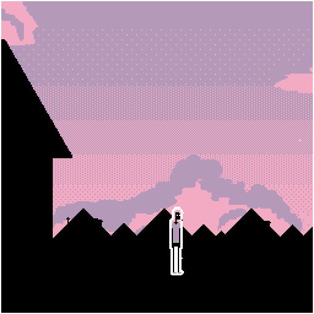
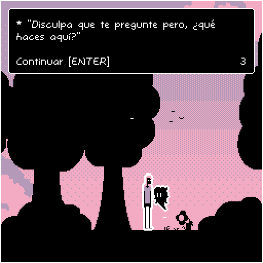
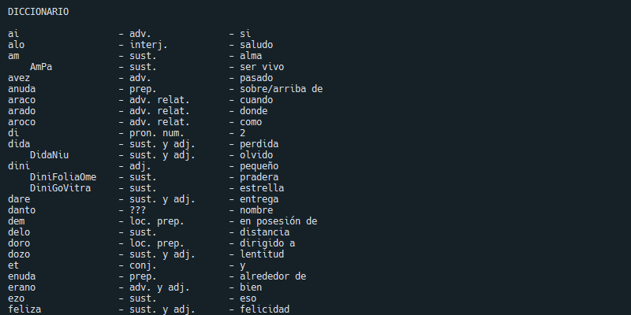

heyyy
bueno, lo prometido es deuda, y creo que prometí un par de cosas al menos.
primero lo primero, me gustaría agradecer la paciencia que algunos están teniendo intentando seguir estas actualizaciones semanales, soy más que consciente de la falta de contenido que he estado largando, pero tengo mis razones para eso, y me gustaría hablar de ellas.
lo primero y lo más evidente es melodías automatizadas para calmar a los fantasmas inofensivos pero persistentes.
este álbum es un pequeño proyecto en el que vengo trabajando desde hace tiempo y estoy más que feliz de que al fin puedan escucharlo. si, este es el álbum que vengo mencionando hace semanas, del cual no podía hablar porque aún no lo había terminado.
el concepto principal de este ep fue, desde el inicio, no componer ninguna melodía, al menos ninguna intencional, durante todo el ep, y siento que cumplí con eso bastante bien. admito que hay cada tanto algún acorde acompañando las melodías, pero nada más que eso. todas las melodías que se escuchan son automatizadas, generadas aleatoriamente basándose en una escala. dejando de lado la creación de melodías, mi trabajo era hacer algo con esas melodías, y ahí es donde nació la magia de el ep.
al removerme del proceso creativo de la creación de melodías, una gran parte del proceso creativo estaba ya hecho, así que lo que me quedaba por hacer era encarar la otra gran parte de la música: el sonido. crear música electronica me permite algo que tal vez si simplemente tocara el piano no podía hacer, y eso es modificar el sonido, descomponerlo, torcerlo, destruirlo y crearlo, hacer que una melodía suene completamente diferente a otra, incluso si son las mismas notads, tocadas al mismo tiempo. cómo hago eso? simple: ambientación.
yo considero que el genero principal en el que compongo es, aparte del paraguas enorme que es la música electronica, es la música ambiental, o ambient. y una de sus características más interesantes es el hecho de que esta no intenta tener melodías pegadizas, o estructuras de canción genéricas, sino que simplemente intenta crear un ambiente, una textura, una imagen, un sentimiento a veces. es bastante evidente en canciones como lima / claro de bosque, donde apenas hay notas, y casi todo el espacio sonoro se lo lleva el reverb y el delay de estas notas.
una de mis mayores inspiraciones, conceptualmente hablando, es una cita de brian eno, compositor de probablemente el álbum de música ambiental más conocido: ambient 1: music for airports. en ella, el dice que la música ambiental estaba hecha para ser "tan ignorable como interesante". esa frase resuena mucho en mi cada vez que intento componer una canción, y aunque admito que no puedo seguir este concepto en cada una de mis piezas, algunas de ellas tienen su base casi completamente en esta idea. piezas simples, las cuales llegan, pintan una imagen, y se van. si puedo hacerte sentir eso, al menos un poco, entonces estoy haciendo las cosas bien.
cuestión, estoy muy contento de al fin poder mostrarles estas canciones, espero que las disfruten.
cambiando de tema un poco, recuerdan que hace tiempo dije que estaba trabajando en un juego? si, eso todavía siguen en pie.
no, aún no está en un formato jugable al publico, pero ese día se acerca cada vez más. por ahora, lo unico que puedo dejarles son algunos pequeños gifs para que tengan una idea de qué es lo que se viene.
aquí tienen un par de imágenes de mi próximo juego: otoño interminable dentro de una caja de papel:


volviendo a hablar de viejo conceptos los cuales no menciono desde hace tiempo, hablemos por un segundo de algo muy muy muy especial en lo cual estoy trabajando hace varios meses ya: mi próximo libro.
cada vez falta menos para que este pueda ver la luz del día. no puedo decirles cuando, pero puedo decir que falta poco, no me gustaría arruinar la sorpresa.
esperen pronto la publicación oficial y completa de café de vainilla!!!
y por ultimo, tal vez uno de mis más grandes proyectos cada día crece más y más grande. estoy hablando, obviamente, del lenguaje de brujas antiguo. tal vez en unos meses pueda lanzar la primer versión alfa al publico, aunque cada vez que lo veo siento que faltan miles y miles de palabras nuevas esperando para ser creadas, pero supongo que eso es lo divertido de crear un nuevo idioma, no?
lo que tal vez puedo compartirles es una pequeña captura de pantalla del enorme documento donde estoy almacenando todas las palabras. prometo mostrarles más pronto, solo tenganme paciencia. el tiempo es finito, y lamentablemente para todos, mis ganas de iniciar nuevo proyectos no lo son.

bueno, supongo que eso es todo por ahora. de nuevo pido perdón por hacerlos esperar por casi un mes sin nuevas noticias, es solo que estoy trabajando en todas estas cosas al mismo tiempo, lo cual es exhaustivo pero increíblemente divertido. hasta dentro de 2 semanas!